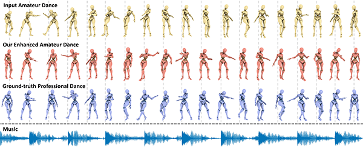
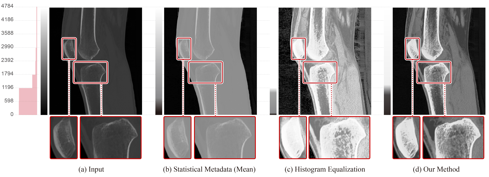
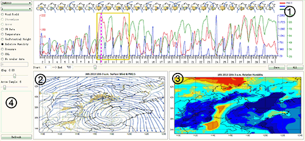
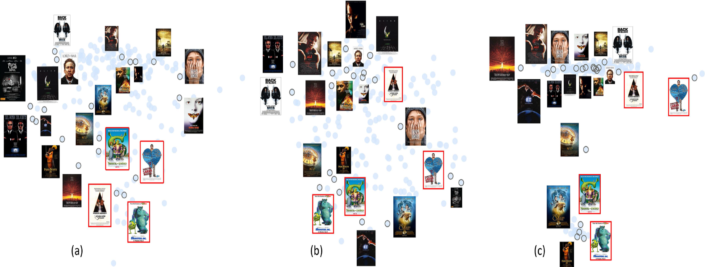
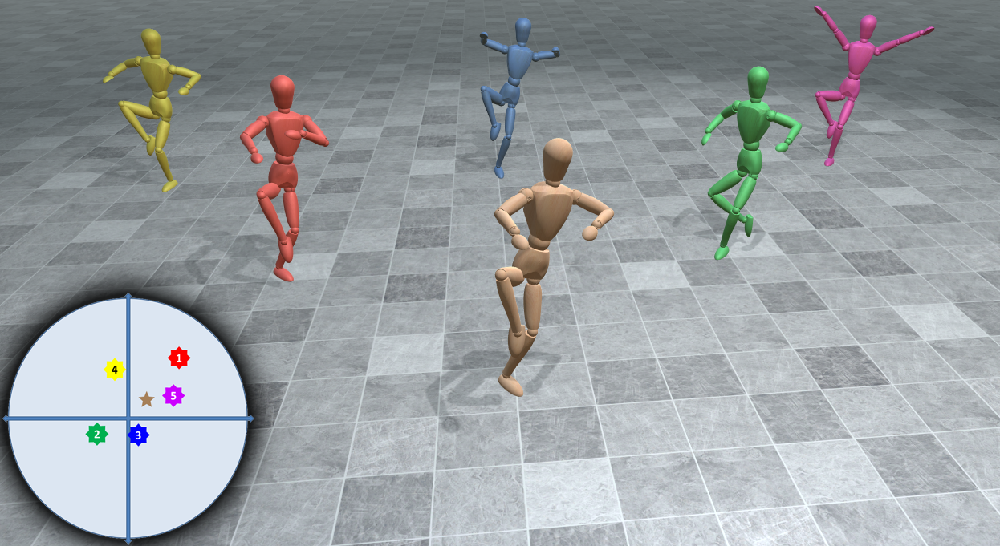
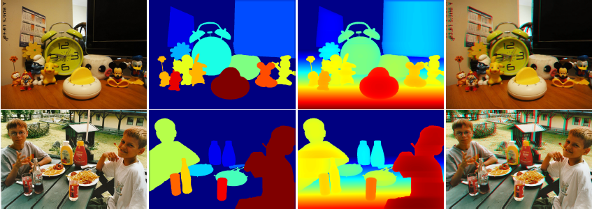

Biography

Dr. Qiong Zeng is currently an Associate Researcher in Interdisciplinary Research Center (IRC) at School of Computer Science and Technology, Shandong University.
Before that, she was a postdoctoral research fellow in Shandong University working with Prof. Baoquan Chen. Qiong received her Ph.D. degree on December 2015 from Shandong University, supervised by Prof. Changhe Tu, and completed her undergrate study at Nanchang University, with a Bachelor's degree in Digital Media Technology and a minor major degree in Public Relations. During those periods, she has visited and collaborated with leading researchers in Computer Graphics, including Prof. Daniel Cohen-Or, Prof. Dani Lischinski, Prof. Kangkang Yin, Prof. Ralph Martin and Prof. Yiorgos Chrysanthou.
Her research interests are Visualization and Computer Graphics, especially focusing on task-driven color design and the enhancement of visual data. She has published several papers in the leading journals and conferences, such as IEEE TVCG, CGF, GMOD, IEEE VIS and Eurographics. In addition, she has lead and participated in several national projects.
** I am recruiting self-motivated master students to collaborate on academic projects such as color design and visual data enhancement. Students with Bachelor's degrees in CS or other related areas are all welcome. **
Teaching
sd01332210 Practices on Big Data Analysis
sd99410090-751 Innovative Interdisciplinary Experiments
Selected Publications
 Qiu Zhou#, Manyi Li#, Qiong Zeng*, Andreas Aristidou, Xiaojing Zhang, Lin Chen, Changhe Tu*. Let's All Dance: Enhancing Amateur Dance Motions. Computational Visual Media 2022, to appear.
[paper], [Project Page], [Codes]

[paper], [Project Page], [Codes]

[paper], [Project Page]

Wenting Zhang,
Yinqiao Wang,
[paper]

[paper], [Project Page]

Andreas Aristidou,
[paper], [project page]

[paper], [project page]
[paper]
Funds
[1] Task-driven Intelligent Color Design, NSF-Shandong No. ZR2021MF102, 2022.1-2024.12.
[2] Similarity Embedding of Visual Data and Its applications in Scene Analysis, NSFC No. 61602273, 2017.1-2019.12.
Research
Color Design for Visualization: color is the most extensively used encoding element in visualization. However, color design is often considered as a trial-and-error process, in which designers try different color schemes and select an appropriate one with subjective perceptual decisions. This process is often tedious, time-consuming and hardly to extend. Focusing on those problems, our project aims to explore a quantitative color effectiveness metric and intelligent color design methods with consideration of data, task and user in visualization. We propose a solution composed of task-driven color effectiveness metric, perception-aware automatic color design and interaction-aware adaptive color design. Our research topics include: (1) task-driven color effectiveness metric, building correlations among data, task and color effectiveness; (2) perception-aware automatic color design, building automatic color computing schemes with perceptual constraints; (3) interaction-aware adaptive color design, building adaptive color computing schemes based on interactive constraints in multiscalar and time-series data.
[Color Design Survey Browser, paper (Chinese)]